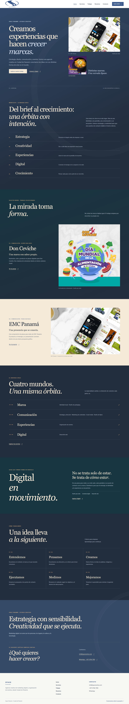
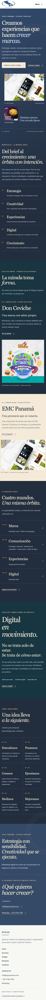

Recorrido recuperado
Hero → Manifiesto → Selected Work → Cuatro Mundos → Digital → Método → cierre
El cambio frente a la versión rechazada es de jerarquía y continuidad: Space se presenta inmediatamente como estudio/agencia creativa de Panamá; el trabajo real de diseño para redes reemplaza el protagonismo de la boda. Hero y Manifiesto comparten atmósfera azul suavizada, sin superposición de mensajes.
Se recuperan serif editorial, tinta, crema y mar de los artboards previos. El azul de marca #3B598D permanece en logo/navegación y se suaviza en apertura/cierre. El gesto orbital es estático y secundario. No se reinstala una Tierra decorativa, WebGL, video, pinning, GSAP ni una transición obligatoria. El relevo ocurre por lectura natural, incluso sin JavaScript o con movimiento reducido.
Capturas de la implementación real
Capturadas el , sobre build de producción en loopback. Son capturas completas, no wireframes ni pruebas de una web publicada. La revisión técnica no sustituye aprobación visual.
Escritorio · viewport 1440 × 900 · página completa

Móvil · viewport 390 × 900 · página completa

Material utilizado y límites
| Recurso | Procedencia y uso | Derechos |
|---|---|---|
| Logo Space | Original oficial conservado. Cabecera, proporción íntegra y sin filtros. | Identidad existente de Space. |
| EMC Panamá | portfolio-v12/emc-social.webp → derivado nuevo de 1600 × 1066. Hero, Selected Work y Trabajo. Es una composición de redes, no un caso de desarrollo web. | Trabajo de Space confirmado por el dueño; uso local autorizado. |
| Don Ceviche · Alimentación | don-ceviche/post-4.png → WebP nuevo de 1440 × 1440. Selected Work y Trabajo, sin recorte. | Mismo permiso local expreso. |
| Don Ceviche · Guacho | don-ceviche/post-7.png → WebP nuevo de 1440 × 1439. Evidencia secundaria en Hero y segunda pieza en Trabajo. | Mismo permiso; no se inventa autor de fotografía individual. |
| Casamiento | Dos fotos previamente autorizadas. Solo en su caso secundario de Eventos en Trabajo; ninguna en Home. | Registro previo del permiso conservado. |
Inventario previo a incorporación: visual-resource-inventory.json. E:\SPACE MARKETING estuvo accesible parcialmente; se inspeccionaron solo recursos visuales/metadatos, no documentos internos. Ningún recurso de E: fue importado: material con créditos inciertos permanece pendiente. Psico Jazmín y AsuMesa siguen excluidos de todas las áreas públicas. Los tres derivados nuevos suman 455884 bytes; originales intactos.
Verificación y decisión pendiente
Lint, siete pruebas nativas, build y smoke pasan. Navegador Chrome: cinco rutas a 1440, 768, 390 y 320 px; sin desborde horizontal ni imágenes rotas, errores de consola o solicitudes externas en el recorrido normal. Menú/teclado, sin JS, movimiento reducido, 404 y fallo intencional de imágenes comprobados por separado. Se corrigió la primera composición del Hero porque una pieza ocultaba el crédito de EMC; las capturas mostradas son posteriores a esa corrección.
Ver informe y límites. No se verificaron Safari/Firefox, hardware móvil, lector de pantalla ni Core Web Vitals. Ninguna prueba equivale a aprobación visual o autorización de publicación. Los clientes nuevos están autorizados para revisión y web local solamente. Sin commit, push, merge, cambio de rama ni despliegue.